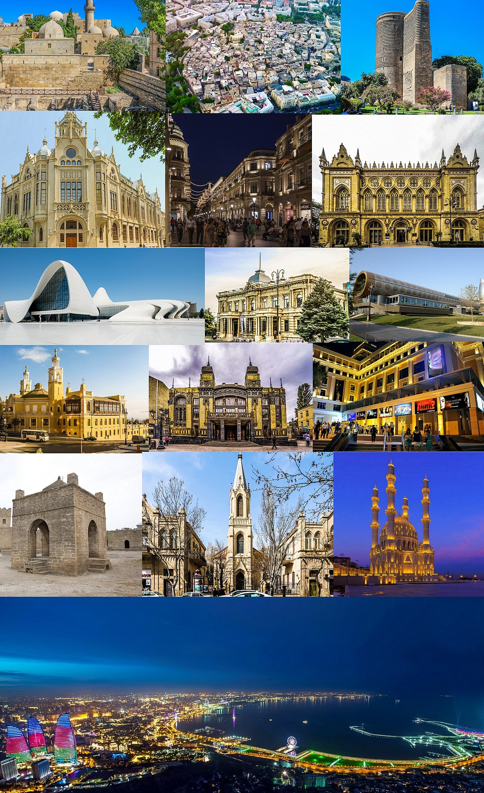

Baku
Baku is the capital and largest city of Azerbaijan, as well as the largest city on the Caspian Sea and in the Caucasus region.[9] Baku is 28 metres (92 ft) below sea level, which makes it the lowest lying national capital in the world and also the largest city in the world below sea level. Baku lies on the southern shore of the Absheron Peninsula, on the Bay of Baku. Baku's urban population was estimated at two million people as of 2009.[10] Baku is the primate city of Azerbaijan—it is the sole metropolis in the country, and about 25% of all inhabitants of the country live in Baku's metropolitan area.
Baku is divided into twelve administrative raions and 48 townships. Among these are the townships on the islands of the Baku Archipelago, as well as the industrial settlement of Neft Daşları built on oil rigs 60 kilometres (37 miles) away from Baku city in the Caspian Sea. The old city, containing the Palace of the Shirvanshahs and the Maiden Tower, was designated as a UNESCO World Heritage Site in 2000.
